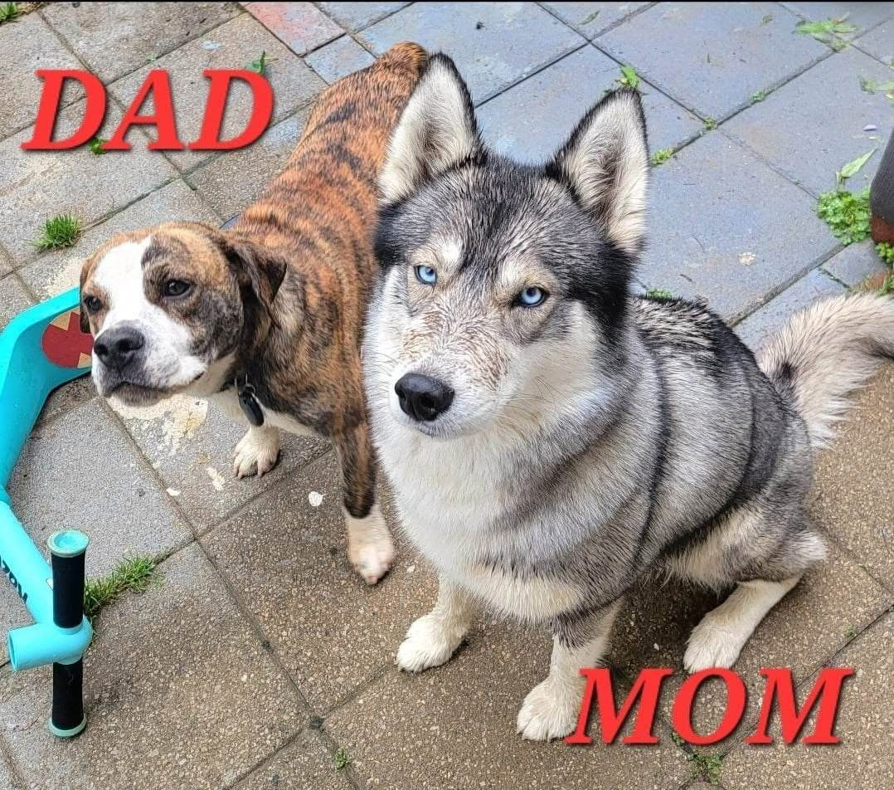

If you’re looking for a sweet, loyal companion to join you on runs, hikes, camping trips, or travels — Gibson is your guy. He loves being active and outdoors, but at the end of the day, he’s just as happy to curl up beside you, melt right into you, and soak up all the love and snuggles.

Basic Info
| Color: Lemon Brindle | Fully Vaccinated | Housetrained |
| Age: 2.5 years | Heartworm (-), on monthly meds | Crate-trained |
| Sex: Male — Neutered | On flea and tick meds | Good with kids |
| Weight: 30 lbs | Microchipped | Good with dogs > 30lbs |
| Size: Medium | Needs experienced adopter | ABSOLUTELY NO CATS |
Breed
Breed: Husky (50%) — English Bulldog (34%) — Beagle (16%)
Personality
| Adventurous • Active • Affectionate • Athletic • Confident • Cuddly • Curious • Eager to Please • Energetic • Enjoys Outside Activites • Enjoys Training Sessions • Friendly • Food-motivated • Goofy • Knows Basic Commands • Prefers Routines • Snuggly |
Strange Quirk • He LOVES ice cubes! He will coming running from anywhere in the house to get one when he hears the icemaker on the fridge! |
About Gibson
|
Gibson is an absolute lovebug. He is just the sweetest dog. He's an incredible adventure partner who loves hiking, camping, and exploring the outdoors while also being the ultimate snuggle buddy during down time. He adores curling up near his people, or snoozing near them during the day. As part husky, Gibson has the playful energy and adventurous spirit you’d expect — he thrives on daily walks, outdoor time, and staying active with his people. But true to his sweet nature, once he’s had the chance to get his energy out, he’s content to settle right in and be your lap buddy. He’s great with kids and with dogs his size or larger, and while he’s never been an only dog, he would do well as the sole pup as long as he has plenty of love and attention from his human pack. Gibson has plenty of experience traveling and is a dream in the car - he settles right down and goes to sleep. |
Gibson's History
|  |
Gibson was adopted from a local animal shelter in March of 2025. He came from an accidental (?) litter of puppies and lived in a home with multiple other dogs and 4 kids. He never received any vet care or training prior to his adoption and came into fa foster-to-adopt home with no house manners. Gibson is now neutered and fully vaccinated. He has learned the fundamentals of sit, down, and place (all with implied stay commands), along with a recall (come) and loose leash walking with Blackhawk K9. While Gibson is still polishing his manners, he has come a long way and thrives with consistency. He loves to please and learns quickly, and with continued training and support offfered by Blackhawk K9, he will mature into the perfect companion. Because Gibson is so athletic, he has shown he can clear a 6-foot fence, so a secure setup is important. He’ll thrive with adopters who can offer him a fenced yard with a safe space to play. |
No Cats
| After several months in his foster/adopt home it became clear that he was not safe in a home with cats. He has a strong prey drive and cannot be trusted with them. He also exhibits similar excitement with dogs smaller than him. Gibson is ABSOLUTELY NOT a match for homes with cats, small dogs or other small animals. |

Click This Link For More Photos
New Home Transition
| In order to make the transistion as stress-free as possible for Gibson, he comes with all of his belongings upon adoption. This includes the following: his crate, dog bed, food bowl, wobble feeder, a two-week supply of food, collar, leash, harness, kong, treats, and toys. We will also include his medical records and a document with his daily routine, likes and dislikes. There is a $250 adoption fee for Gibson. |
Interested in Adopting?
| If you're interested in being considered as a potential adopter for Gibson, please fill out our interest form. |